The Inuit are a people whose survival technologies defy death itself in conditions where the average annual temperature stays below freezing. They have not merely adapted to the Arctic; they have turned ice and snow into building material and tools. Their main achievement is the igloo. This is not just a snow hut, but a masterpiece of engineering. The Inuit use blocks of dense snow, cutting them so that they taper upward, forming a self-supporting dome. Inside, thanks to human body heat and a small fat lamp called a "qudliq," the temperature can be 20-30 degrees higher than outside. A special entrance shape — a tunnel located below floor level — creates a "cold trap" that prevents warm air from escaping and cold air from entering.
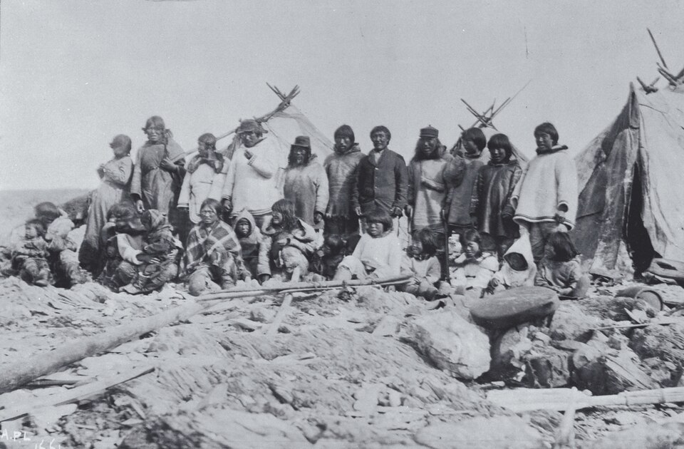
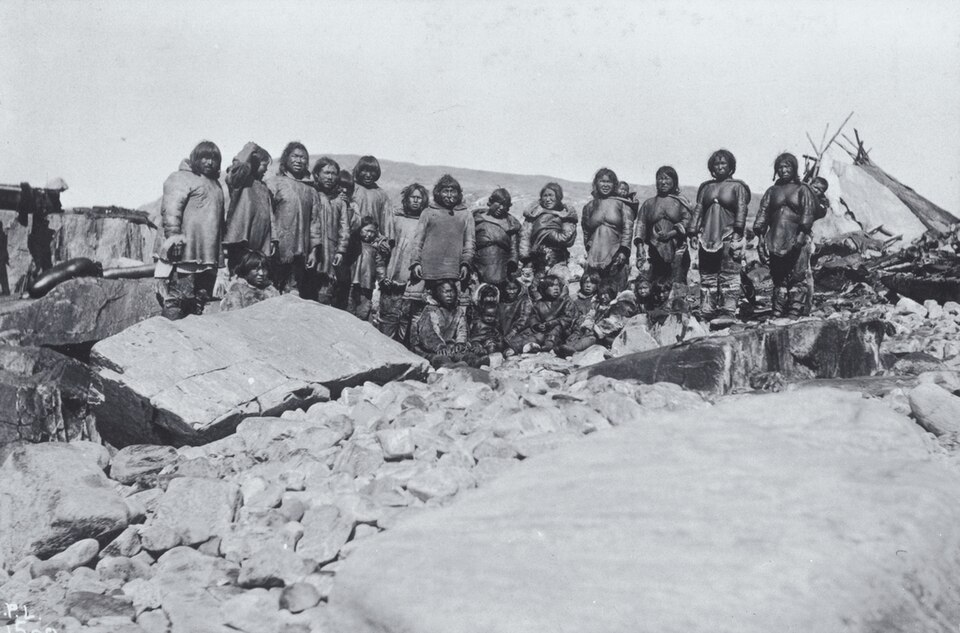
Inuit clothing is a complex multi-layered system that surpasses modern synthetics. They use caribou and seal skins, sewing them with animal sinews using bone needles. The seams are so airtight that the clothing does not let in icy water. Caribou fur has a unique structure: each hair is hollow inside, which creates an ideal air layer. They wear fur in two layers — one inward to the body, the other outward, which allows them to survive at -50°C.
Inuit transportation technologies are also unique. The kayak is their invention, representing a lightweight frame made of driftwood or whalebone, covered with sealskin. A kayak is built individually to the hunter's dimensions, becoming his extension. In case of a capsize, an Inuit performs the "Eskimo roll," returning to a vertical position without leaving the boat. For moving on ice, they use umiaks (large boats) and dog teams, where every detail of the sled is tied with leather straps, giving the structure flexibility on uneven pressure ridges. Their vision was protected by "snow goggles" — bone plates with narrow slits that blocked the blinding sunlight reflected from the snow, preventing snow blindness without the use of glass.
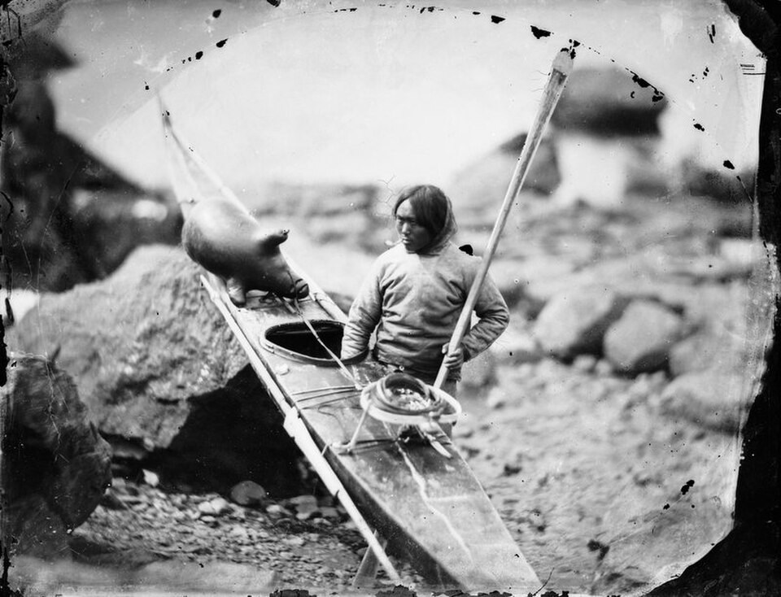
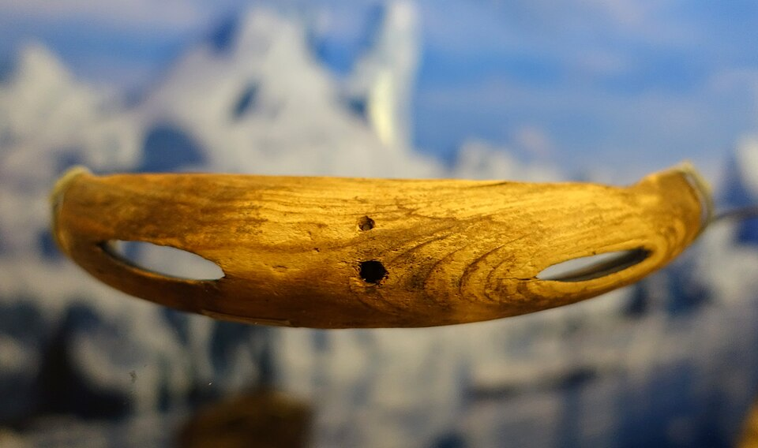
Whaling and sealing for the Inuit is not just a search for food, but complex mathematics. The main weapon, the harpoon, is a collapsible structure. The tip is made of bone or stone and is attached to the shaft so that when it hits the animal's body, it separates and turns across the wound under the skin. A long walrus hide rope with a float ("avatanyak") — an inflated sealskin — is tied to the tip. This prevents the wounded beast from diving deep and forces it to spend energy resisting the air in the float. Thus, a hunter can exhaust even a huge bowhead whale using the laws of physics and buoyancy.
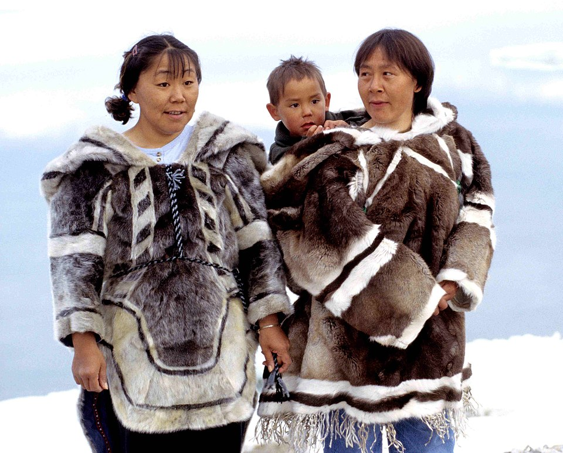
Few know, but the Inuit of Greenland used meteoric iron long before contact with Europeans. They found fragments of an iron meteorite at Cape York and, using stones, beat off small flakes of metal, which they then inserted into the grooves of bone knives and arrowheads. This was a unique technology of "cold forging" cosmic metal, which made their tools the sharpest in the Arctic.
For the Inuit, the world is not divided into living and non-living. They believe in "Anirniq" — a life force or soul that every being has: a seal, a polar bear, and even the ice or wind itself. The most important tradition is the ritual after the hunt. When a hunter kills a seal, he must pour a little fresh water into its mouth. It is believed that marine animals always crave a drink because they live in salt water. If the hunter shows this respect, the animal's soul will return to the ocean and tell others that this person is kind, and they will allow him to hunt again.
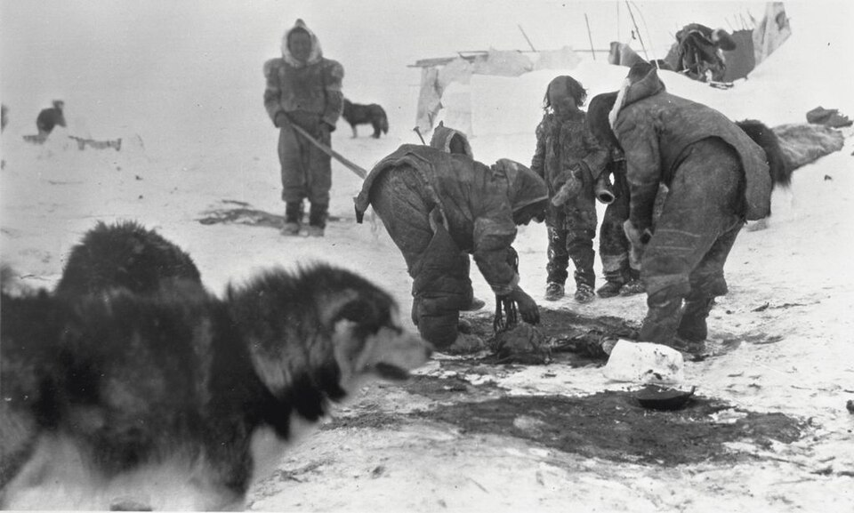
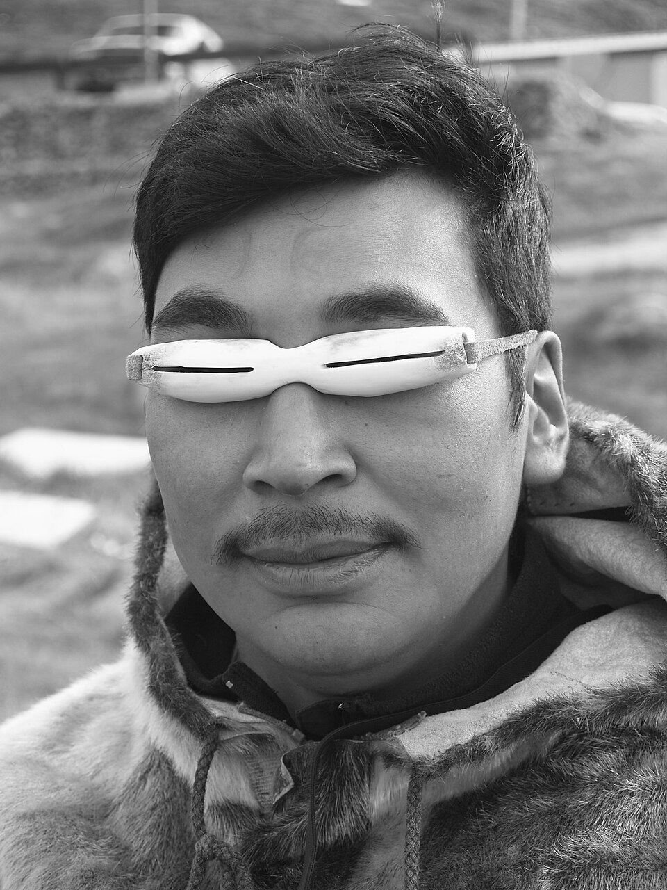
Inuit life is regulated by a complex system of "Pilyuyak" (rules). For example, one must not mix products of land hunting (caribou) and products from the sea (seal) in one meal or one pot. Breaking this balance, in their opinion, can anger Sedna — the goddess of the sea, who will hide all the fish and beasts in the depths.
A name among the Inuit is not just a label, it is part of an ancestor's soul. When a child is born in a family, they are given the name of a recently deceased relative. It is believed that with the name, the character traits and skills of this ancestor pass to the child. Such a child may be addressed as "father" or "grandmother" (depending on whose name they bear), and they are treated with special respect, as they are seen as the continuation of the lineage.
The Inuit upbringing system is perhaps the most striking aspect of their culture. In conditions where the slightest mistake can cost a life, they have developed a method that completely excludes shouting, physical punishment, and coercion. This is upbringing through calmness, observation, and play. For an Inuit, showing anger toward a child is a sign of an adult's weakness and foolishness. It is believed that if you shout at a child, you are simply acting like a small one yourself.
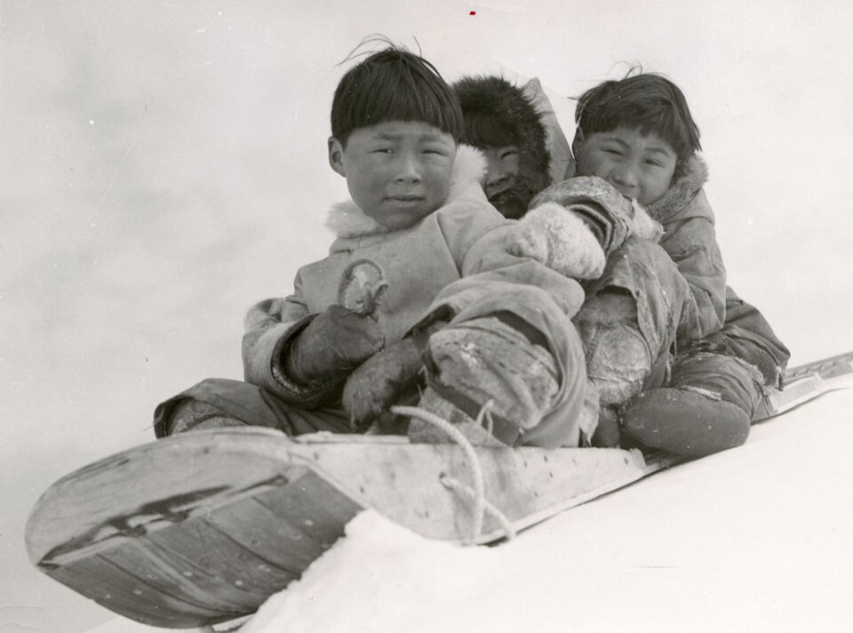
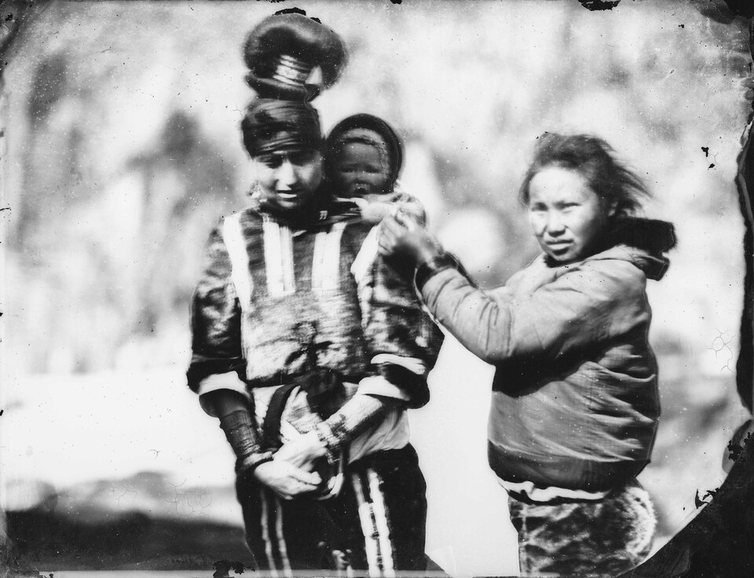
Inuit children grow up in an atmosphere of absolute emotional stillness. If a child is capricious or behaves badly, the parents simply wait for the "storm" to subside, without entering into conflict. They believe that anger blocks the mind, and in the Arctic, the mind must always be clear. Instead of punishment, "social cooling" is used. If a child does something unacceptable, they are simply no longer paid attention to. For a child in a tight community, this is the hardest trial, and they quickly understand which behavior leads to isolation. So that children do not approach the edge of the ice or a lead, they are not lectured. They are told about the sea monster Qalupalik, who wears a huge parka bag and takes disobedient children under the ice. Fear of the monster is much more effective than dry prohibitions.
The Inuit have no concept of "school" in our sense. Learning is built into life itself. Boys from early childhood are given miniature copies of bows and harpoons, and girls are given tiny "ulu" knives made of bone and pieces of skins. A child does not "play" hunter; they train the motor skills that will allow them to get food tomorrow. Children are always near adults. Until age 2-3, a mother carries the child in an "amauti" (a special parka-backpack), where the baby feels the mother's movements against their skin and sees everything she does. They absorb survival skills through their pores.
Inuit children sleep when they want and eat when they are hungry. It is believed that a child must learn to listen to their own body. If forced to sleep on a schedule, they will not learn to feel fatigue, which can be fatal during long treks across the tundra. There are no "strangers'" children in the settlement. Any adult can feed, watch over, or guide any child. This creates a sense of absolute security for the little one — the whole world (the whole community) is on their side. When a boy catches his first fish or kills his first bird, the meat of this catch is distributed to the elders of the community. This teaches the main principle of the Inuit: "You survive only when you share with others."
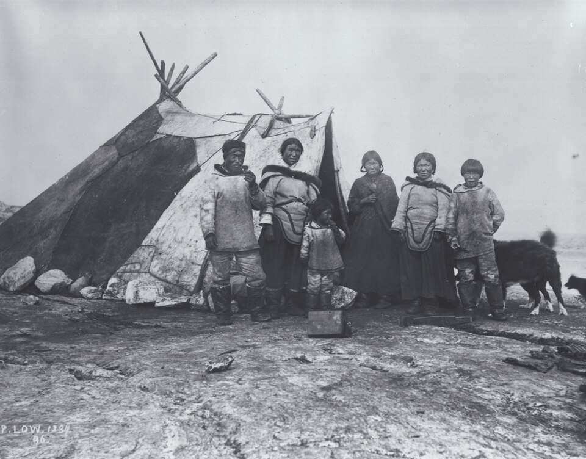
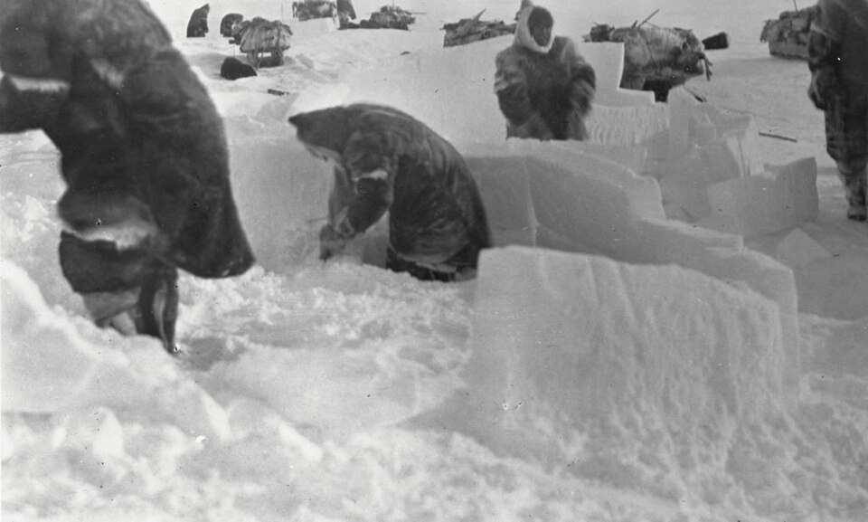
Throat Singing (Katajjaq) is one of the most recognizable and mystical traditions, which originated as entertainment for women while the men were on long hunts. Unlike ordinary singing, it uses not only the vocal cords but also resonance in the chest, as well as sharp inhales and exhales. Usually, two women stand face to face, holding each other's shoulders, and compete in rhythm. The songs always imitate the sounds of the Arctic: the cry of a goose, the sound of the wind, or the crunch of snow under sled runners. This turns into a kind of game: whoever breaks the rhythm first or laughs loses.
In conditions where the survival of the group depends on genetic diversity and mutual aid, traditions have formed that shock the Western world. Wife Exchange was not a matter of promiscuity, but acted as a high form of diplomacy and a way of survival. If a hunter needed to go on a long and dangerous journey and his wife was ill or pregnant, he could "borrow" a wife from a friend who was physically ready for the transition. This created unbreakable bonds between families, making them practically relatives, obliged to help each other until death.
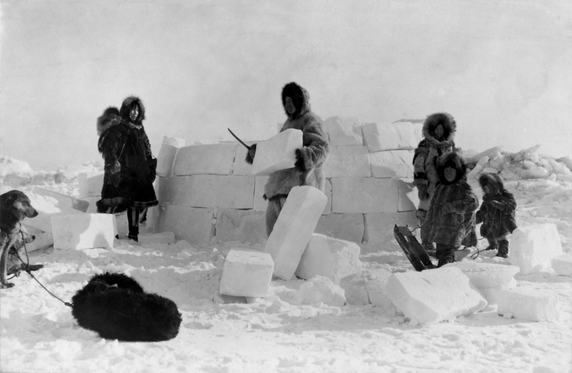
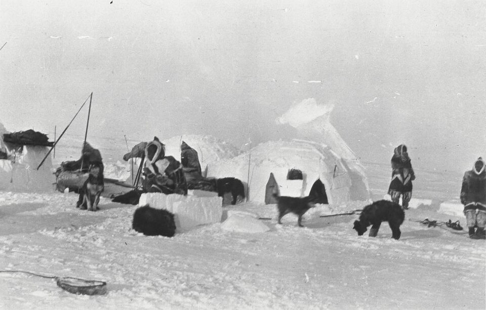
The Inuit had no writing until recently, so the entire history of the people is encoded in myths. The story of Sedna explains not only the origin of sea creatures but also why the ocean is so cruel. According to legend, Sedna was a beautiful girl who refused to marry local hunters. In the end, she was lured away by a trick by an evil spirit. He promised her a luxurious life but took her to a distant island, where she became a prisoner in poverty and hunger. Sedna's father, learning of this, arrived in a boat to save his daughter. However, the captor noticed the disappearance and summoned a terrible storm upon the sea.
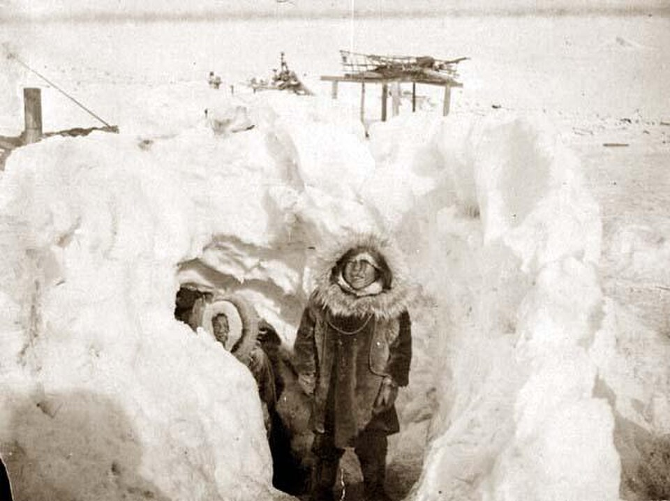
When it became clear they would both perish, Sedna's father fell into panic. To save his own life, he pushed Sedna overboard into the icy water. The girl gripped the sides of the boat with a death grip. So that she would let go, the father took a knife and cut off her fingers. At that exact moment, a miracle of transformation occurred: the severed phalanges turned into the first seals, the second joints became walruses, and the hands turned into whales. Sedna herself went to the bottom, becoming the powerful Mistress of the Sea. This legend is a reflection of how the Inuit perceive the sea: it gives life, but it also demands immense respect.
Inuit medicine is extreme biology in action. In conditions where there are no plants for tinctures, they turned the Arctic fauna itself into their first aid kit. The main problem of the North is scurvy, but the Inuit did not know this disease for centuries. The secret is in eating raw seal liver and whale skin (muktuk), which contain as much vitamin C as citrus fruits. To treat open wounds, the Inuit used fresh animal skin or the thin inner film of seal fat. It works like an airtight bandage. To treat snow blindness, they dripped fish oil into the eyes or used cold compresses of wet moss to relieve swelling and restore vision.
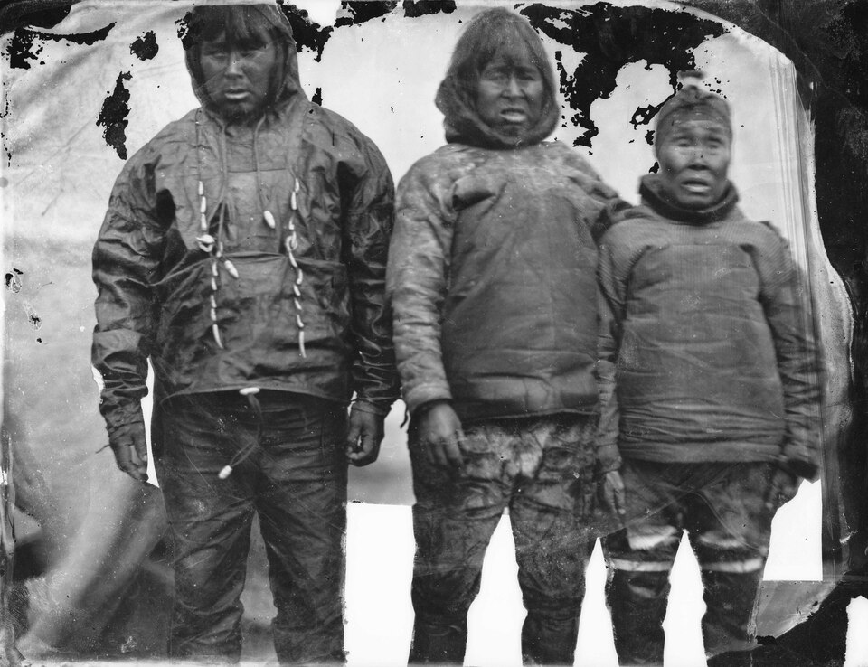
Today, their unique way of life is under threat due to global warming. The ice that was their road and building material is melting, and animal migrations are changing. However, the "hunter's spirit" and the principles of collective survival remain in their DNA.